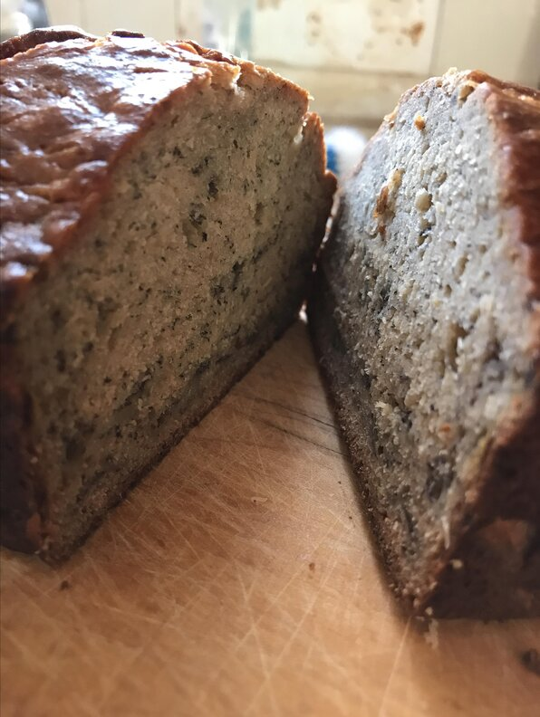

Banana Bread

Description
A moist, delicious treat
- Prep: 15 mins
- Cook: 1 hr 5 mins
- Total: 1 hr 20 mins
- Servings: 12
- Yield: 1 loaf
Ingredients
- 2 cups all purpose flour
- 1 teaspoon baking soda
- 1/4 teaspoon salt
- 1/2 cup butter
- 3/4 cup brown sugar
- 2 eggs, beaten
- 2 1/3 cups mashed overripe bananas
Directions
- Preheat oven to 350 degrees F (175 degrees C)
- Lightly grease a 9x5 inch loaf pan
- In a large bowl, combine flour, baking soda and salt
- In a separate bowl, cream together butter and brown sugar. Stir in eggs and mashed bananas until well blended
- Stir banana mixture into flour mixture; stir just to moisten
- Pour batter into prepared loaf pan.
- Bake in preheated oven for 60 to 65 minutes, until a toothpick inserted into center of the loaf comes out clean
- Let bread cool in pan for 10 minutes, then turn out onto a wire rack.